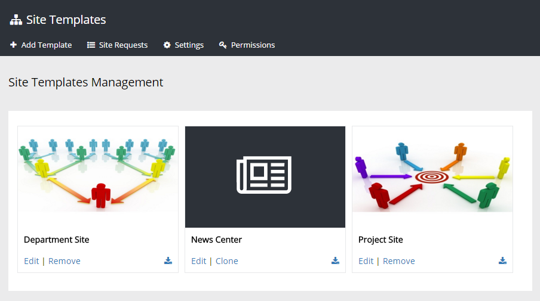
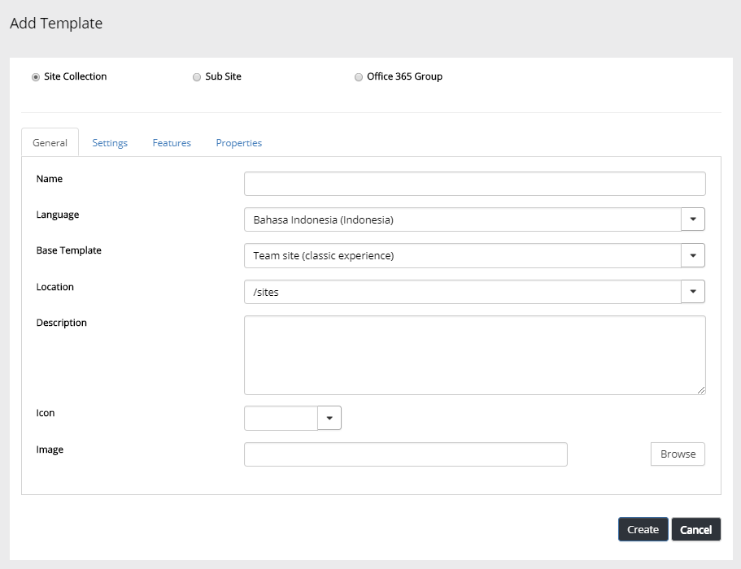
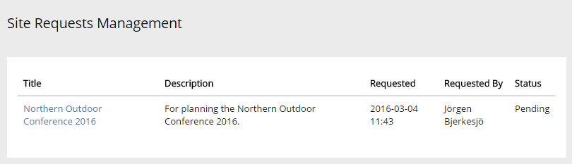
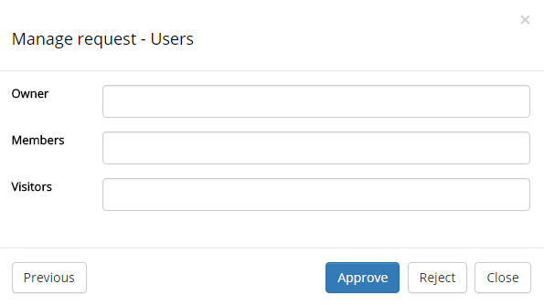
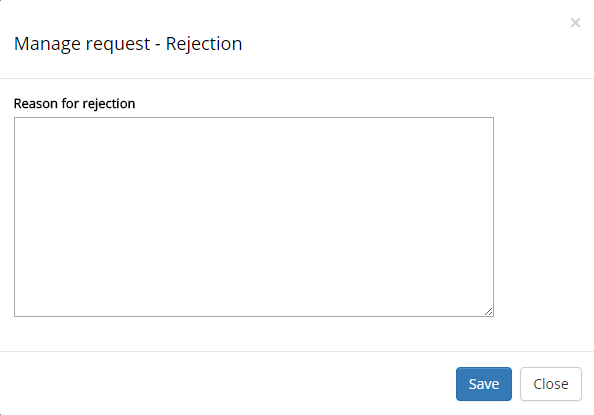
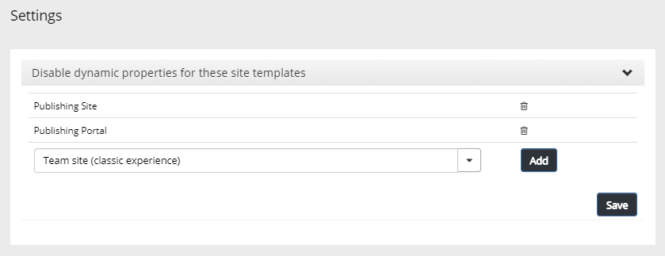
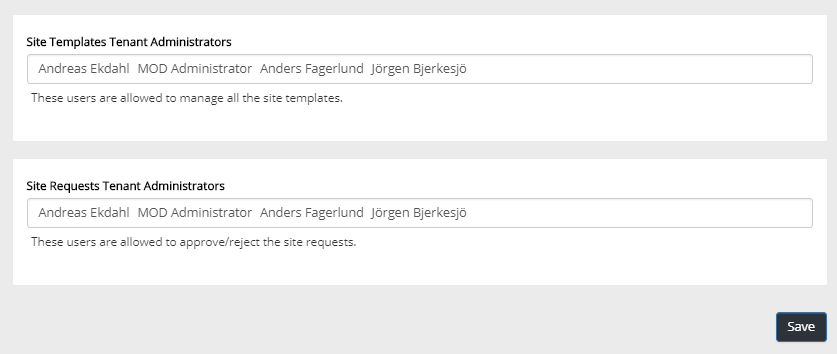

There are two different ways of implementing new site templates in Omnia:
Implement through code (normally done by a programmer).
Creating new/edit templates by using the Site Templats functionality.
The first option does not necessarily rule out the second. A possible, and rather common scenario, is that a programmer implements a number of templates that a administrator then can edit to add some details.
An important difference is that a programmer can lock parts of, or the whole site template. A locked template can't be deleted but can be edited, or be cloned to form the base for a new template created here. The News Center template is an example of a programmer implemented, locked site template.
When you enter Site Templates, the existing templates are shown, for example:

Any existing template can be downloaded as JSON (normally only used by programmers).
When you create or edit a template, the following fields and options can be used:

The first step when creating a new template is always to select "Site collection", "Sub site" or "Office 365 Group". For different kinds of Omnia team sites, you should normally select "Site collection". If you would like to create a standard Office 365 group, click that option. In an Office 365 group you get all the standard tools, for example a group mail. An Office 365 group will be available in "My sites" the same way as the Omnia sites.
Name The title of the template, shown under the image.
Language Select language for the template. On the "Settings" tab you can set if the user is allowed to change language or not. This option is not available for Office 365 Groups, language is in this case handled through Office 365.
Base template Select template to base the new template on. If in doubt, select "Team site", it's the most commonly used. This option is not available for Office 365 Groups.
Location Select location for the sites created from this template. For a site collection site, you can select to create sites from this template in any of the managed paths, normally either /sites or /teams. For sub sites you can select that a site created from this template will be placed as a sub site to the current site, or in a certain path (recommended) for example /sites. This option is not available for Office 365 Groups.
Description Add important details for the template here, for example when this template should be used. The description is shown when the pointer is over the template.
Icon The icon is shown in the My sites lists for all sites created with this template, and in the site directory. Useful to, at a quick glance, see what type of site it is. You can use an icon from the built in set, or choose any image as an icon. Not mandatory. This option is not available for Office 365 Groups.
Image You can select any image for the template.
Permission Level Selecting "Self Service" means users can create sites from this template themselves. When you select "Approver" you must also add approver(s). Can be a person or a service account. A notification e-mail is sent to the approver(s) when a user requests a site. All requests are placed in the "Site Requests" list, see below. Approval can be useful to for example make sure name standards are used correctly or the correct template is used for the stated purpose.
Template Group You can use headings to group templates. This can be used in the settings for the My Sites control, to define which template group should be available when creating or requesting new sites, in a certain publishing portal.
Display To This can be used for targetting templates to a specific group of users.
Default Administrator If empty, the user creating or requesting the site will automatically become the administrator (Owner) of the site. If a specific group or user should be administrator for all sites created from this template, add that group or user. Not available for sub sites.
Default Secondary Administrator If empty, the user creating or requesting the site can set default secondary administrator of the site. If a specific group or user should be secondary administrator for all sites created from this template, add that group or user. Not available for sub sites or Office 365 Groups.
Default Visitors You can use this to set a default visitor group (read permissions) to all sites created from this template. Let's say it's a template for community pages - then probably all users of the intranet should have read permission to all pages in the site. Not available for Office 365 Groups.
Default member This option is available for Office 365 Groups only. If empty, the user creating the site will automatically become the default user (Owner) of the site. If a specific group or user should be default member for all sites created from this template, add that group or user.
Privacy This option is available for Office 365 Groups only. An Office 365 can be either public or private. In a public site alla users of the tenant can enter the site, read and edit all information. In a private sait only actual members of the site can do that.
Storage Quota (GBs) You can use this to set maximum storage in Gb that can be used by a site created from this template.
Default Time Zone Select default time zone. Can always be changed by the user when creating or requesting a site.
User can select language If the user, when creating or requesting a site, should be able to choose language, select this option. Not available for Office 365 Groups.
User can change privacy This option is available for Office 365 Groups only. When active, the user creating the group can change privacy. If not active, all Office 365 Groups will have the privacy setting you set here.
Unique Permissions Only available for sub sites. Check if permission inheritance should not be on for sub sites created from this template. See this page for more information on how to use Template Group:
Select all Omnia features that should be active for sites created from this template. Note that some features are needed in order for notifications to work, for example "Omnia Team Site - Announcements".
Note that all features are not available for sub sites or Office 365 Groups. These features will be set on site collection level.
See more information about the fetures in the section "Site Scoped Omnia Features" on this page:
The Properties tab is available for Site collection sites and Sub sites, but not for Office 365 Groups.
You can define up to six properties to be used for all sites created from this template. The properties are used for example in Site Directory and in Site Quick Edit.
The first step is to select "Field type" in the list. For "Managed metadata" you have to select a term set. For "Enterprise Keywords" no settings can be done. Enterprise Keywords are always shared throughout the tenant.
For each property you can set:
Mandatory - mandatory or not.
Multiple - if multiple choices should be allowed.
Filterable - If the field should be available for filtering in the site directory, select this option.
Viewable - If information from this field should be displayed in the Site Directory list, select this option.
If changes for the properties are made in an existing site template, the changes will be pushed to all existing sites created from the template. If there are many sites created from the template, this can take considerable time to execute.
Note! If a properties field is removed from a site template, all data for this field, in all sites created from the template, will be deleted.
See these pages for more information on Site Directory and Site Quick Edit:
When "Approval" is selected for any site templates, all requests are placed in this list. Selections and properties can be edited if needed. From this list an administrator can see the settings and approve or reject the site.

Click a link to browse the settings and properties. The last step is to approve or reject the site.

If "Approve" is selected the site is created. If "Reject" is selected, a form is displayed where comments on why the site request was rejected should be entered.

If a site request is rejected, an e-mail is sent to the requester. A new site request must then be done.
Use Settings to disable dynamic properties for some site templates, if needed.

Use the list to additional sites to disable dynamic properties in. To remove a site (to enable dynamic properties) click the dust bin.
If additional users should be able to create site templates, use "Permissions" to add them.
